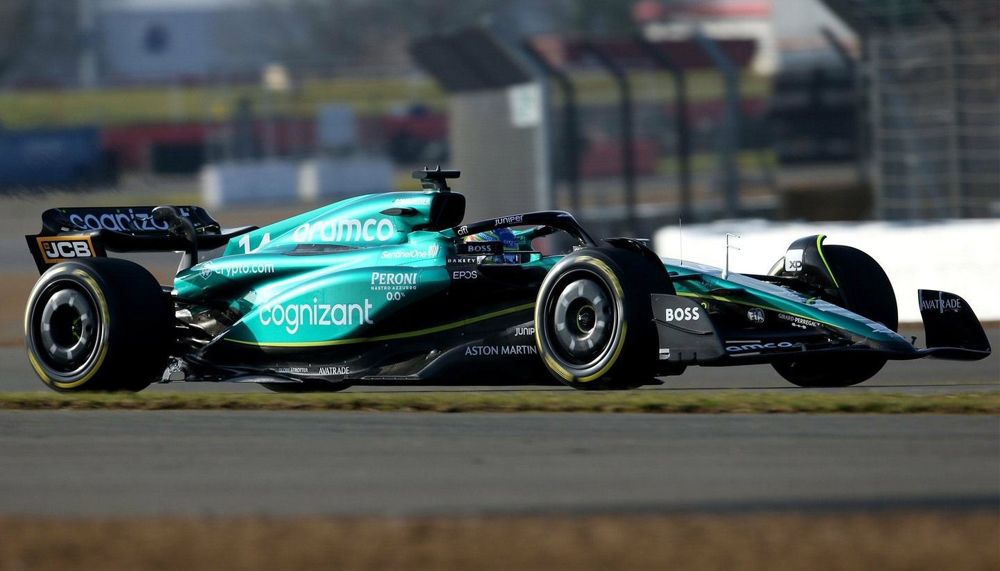

История Aston Martin
История Aston Martin начинается в 1913 году, когда Лайонел Мартин и Роберт Бэмфорд основали компанию. С тех пор бренд прошел долгий путь, став символом британского автомобильного мастерства.
В 1920-х годах компания начала участвовать в автогонках, что помогло ей завоевать признание и уважение. В 1950-х годах Aston Martin представил модель DB5, которая стала известной благодаря фильмам о Джеймсе Бонде.
Сегодня Aston Martin продолжает создавать уникальные и роскошные автомобили, сохраняя традиции и внедряя инновации.